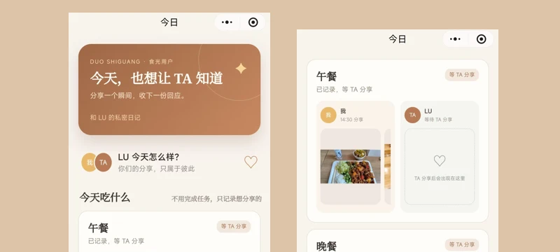

OpenCareer
面向 AI 和互联网岗位的开源求职工作台
AI 智能体 · 产品 · 开源
我在字节跳动做过飞书多维表格智能体的意图路由、产品设计和评测。工作之外，我开发了开源求职工作台 OpenCareer，也把日常用到的办公流程做成了智能体技能。
面向 AI 和互联网岗位的开源求职工作台
工程创新设计原型。多个智能体分步澄清问题、分析技术矛盾，再结合专利检索生成可回溯的设计方案。
字节跳动
技术影响力：持续在字节内部技术社区 ByteTech 输出 AI / Agent 技术内容，5 次登上首页文章周榜，获评「AI 知识达人」（社区 Top 3%），内容创作量超过 92% 平台创作者。
实测 8 款办公 Agent（WorkBuddy / QwenWork / Kimi Work / GenSpark 等），拆解记忆分层、上下文压缩与 Agent Harness 策略位，提炼「交互-能力-沉淀-集成-基座」五层框架；识别多维表格智能体在统一入口、意图路由、能力感知和持续任务上的差距，作为后续需求输入。
针对多能力 Agent 在复杂指令下存在错误路由与能力误调用的问题，负责意图分发链路的产品设计与上线，涉及智能体的 Workflow 编排、React架构与 Agent Harness —强制意图直连指定 domain、SpecDoc 状态判定、domain 拒识后回流重分配；配套设计 3×3意图路由评测方案完成验收。
从用户实际使用数据出发，清洗 8,664 条未执行明细、抽样回看执行 trace，发现 46% 的异常 case 存在有效条件缺失、复杂逻辑被迫写进提示词；提出AI/手动配置双向切换、自然语言生成结构化条件方案，提高任务执行成功率 10%。
从用户 case 与数据中发现迭代点，推动WEB端&移动端 chatbot权限申请、工作流复制、触发器模板推荐、模型切换、IM 使用增强三项需求，全流程负责 PRD 与策略制定、技术评审、单测走查、灰度与全量。
面向 PMO 团队沉淀的 1000+ 项目文档、流程规范与历史经验，构建团队级 RAG 知识库，完成多源文档解析清洗、语义检索与答案溯源链路，使成员可通过自然语言完成跨文档知识检索，降低新人及运营同学查找内部信息的门槛。
围绕 PMO 高频办公流程，基于 OpenClaw、Hermes 等 Agent 设计并开发 10+ Skills，覆盖项目管理、会议室预订、多文档处理、内部知识检索、浏览器自动化等场景；将通用能力进一步开源至 ClawHub，2 个 Skills 累计下载量 2.1K+。
针对需求信息分散、复杂筛选与查询操作成本高的问题，打通 Meego 项目需求看板，将工作项、状态、负责人、优先级、排期等项目数据封装为 Agent 可调用能力，降低 PMO 日常项目跟踪和信息获取成本。
开发 Skill Creator Pro等工具，将 Skill 开发中的需求澄清、开发测试与交付流程进一步标准化，降低后续 Agent Skill 的开发与维护成本。

岗位雷达、投递跟进、模拟面试与每日订阅。

把需求澄清、开发、测试与交付串成一套技能开发流程。

用微信小程序记录两个人的饮食与日常。
按地点、时间与人数查找可用会议室，完成预订。
从飞书文档提取结构，自动生成白板。
让编程助手检索 Tika 企业知识库。
在浏览器新标签页浏览 AI 热点，并推送到团队群。
聚合 GitHub、X 等来源的每日热点。
论文代码、匿名化样例与稳健性分析结果。
硕士（推免） · 工业工程与管理
学士 · 工业工程 · GPA 3.83/4.00
相关项目：在低空经济供应链智能体中，使用知识图谱检索多层供应关系。